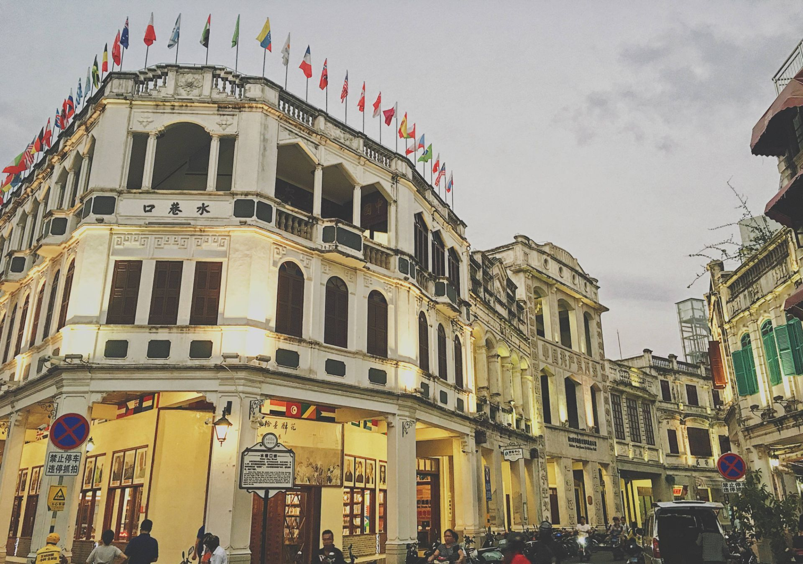

简介
海口骑楼建筑历史文化街区，地处海南省海口市“海口骑楼老街”范围内，占地面积8.05万平方米，主 要集中在博爱路、中山路、新华北路、得胜沙和解放路5条街区。
骑楼大都高两三层，最高不过五层。立面分三段，下段为骑楼列柱，中段楼层，上段为女儿墙，为了商住两用， 多半是“前店后居”或“下店上居”的建筑布局。海口骑楼建筑历史文化街区有丰富的民俗文化，如军坡节、琼剧文化、饮食文化等。

建筑特色
海口骑楼多为砖木结构，以二至三层为多，建筑立面分为三段式，造型元素多样化，下段为骑楼列柱，中段为楼层，上段为檐口， 是近代典型的商业建筑，人们基本上认定这是西方古代建筑与中国南方传统文化相结合演变而成的建筑形式。骑楼造型丰富多样的女儿墙、窗楣、窗间墙、阳台，以及外墙纹样，墙面丰富多彩的窗洞、线角等艺术效果，融合了西方“巴洛克”等建筑装饰风格，使得骑楼建筑群组成了多种形式的古典建筑。
海口骑楼楼顶檐口的天际线多为波浪形、涡卷形、几何形雕饰，方形、半圆形、敞肩形、尖形等形状的窗户拱券弧线优雅大方，体现了欧亚混交的文化特点；外墙体上的浮雕多姿多彩，栩栩如生。这些浮雕反映出来的是吉祥如意 ，有百鸟朝凤、双龙戏珠、海棠花、梅兰竹菊、莲池鲤鱼、松鹤延年、宝瓶等雕刻。
荣誉
2016年1月，海口骑楼建筑历史文化街区被海南省旅游资源规划开发质量等级评定委员会批准为国家3A级旅游景区。
2024年4月，海口骑楼建筑历史文化街区达到国家4A级旅游景区标准要求，确定为国家4A级旅游景区